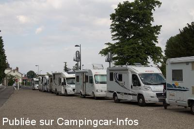

APN = Parking toléré jour/nuit de :
TURCKHEIM
(N° 279)
Accès/adresse :
Quai de la Gare
68230 TURCKHEIM
68230 TURCKHEIM
Latitude : (Nord) 48.08542° Décimaux ou 48° 5′ 7′′
Longitude : (Est) 7.27665° Décimaux ou 7° 16′ 35′′
Tarif : 2015
Stationnement : 5 €
Services :
Autres informations :
Ouvert toute l'année
20 emplacements
Tél : +33(0)389 271 808

Le 17/05/2015 par Marmotte57
Le 21/09/2014 par pirate28
Le 13/11/2012 par moo
Le 11/10/2012 par YN 14
Le 14/05/2007 par J T Webb
de
T. BONFILS
le 17/12/2015 :
Ce parking est devenu payant alors que je l'ai utilisé pendant de nombreuses années quand il était gratuit. 5 euros sans aucun service, ni aménagement, au bord d'une route, le long d'une usine et d'une voie de chemin de fer, pour un marché de noël sans prétention, cela n'est pas correct. Prenez plutôt exemple sur Ribeauvillé où le camping nous est ouvert gracieusement pour un marché de noël d'une autre dimension.
Ce parking est devenu payant alors que je l'ai utilisé pendant de nombreuses années quand il était gratuit. 5 euros sans aucun service, ni aménagement, au bord d'une route, le long d'une usine et d'une voie de chemin de fer, pour un marché de noël sans prétention, cela n'est pas correct. Prenez plutôt exemple sur Ribeauvillé où le camping nous est ouvert gracieusement pour un marché de noël d'une autre dimension.
de
RUDY
le 17/08/2015 :
Dommage qu'il ne soit pas possible de prendre le parking pour moins de 24 heures. Une ou deux heures d'arret pour visiter la ville sont au même tarif que 24 heures, soit 5 euros et en plus sans aucun service....
Dommage qu'il ne soit pas possible de prendre le parking pour moins de 24 heures. Une ou deux heures d'arret pour visiter la ville sont au même tarif que 24 heures, soit 5 euros et en plus sans aucun service....
de
Chantal SMETT
le 18/05/2015 :
Nous y avons passé la nuit du 16 au 17 mai 2015
arrivés vers 20heures nous avons encore trouvé une place
Tres calme
Un peu serré mais rien à redire
Proche du centre ville (tres belle)
Et de plus brocante le lendemain
Rien à redire
Que demander de plus
Nous y avons passé la nuit du 16 au 17 mai 2015
arrivés vers 20heures nous avons encore trouvé une place
Tres calme
Un peu serré mais rien à redire
Proche du centre ville (tres belle)
Et de plus brocante le lendemain
Rien à redire
Que demander de plus
de
Marmotte57
le 17/05/2015 :
Magnifique village alsacien avec de bons restaurants surtout "L'Homme Sauvage" où nous nous sommes régalés. Malheureusement, ce genre de parquage (l'un derrière l'autre) n'est pas très approprié et nous en avons fait les frais...
Magnifique village alsacien avec de bons restaurants surtout "L'Homme Sauvage" où nous nous sommes régalés. Malheureusement, ce genre de parquage (l'un derrière l'autre) n'est pas très approprié et nous en avons fait les frais...
de
Le Camion
le 22/10/2014 :
Ayant passer deux nuits en Octobre, je confirme les deux derniers commentaires.
Ayant passer deux nuits en Octobre, je confirme les deux derniers commentaires.
de
Jean-Philippe Urvoy
le 06/09/2014 :
Nous sommes passés dans cette pittoresque petite ville fin août 2014. L'aire est en fait un parking ouvert à tous mais dans les faits exclusivement occupé par des camping-cars. La proximité de la gare n'est pas gênante, le trafic est faible et s'interrompt la nuit. La ville mérite bien un arrêt. Elle est moins connue et moins prestigieuse que certaines de ses voisines gâtées par la foule et le mercantilisme trop affiché. Ici on fait dans la discrétion. A voir le musée de la "Poche de Colmar" et surtout, surtout consacrez votre soirée à la "Ronde du Veilleur" Unique.
Nous sommes passés dans cette pittoresque petite ville fin août 2014. L'aire est en fait un parking ouvert à tous mais dans les faits exclusivement occupé par des camping-cars. La proximité de la gare n'est pas gênante, le trafic est faible et s'interrompt la nuit. La ville mérite bien un arrêt. Elle est moins connue et moins prestigieuse que certaines de ses voisines gâtées par la foule et le mercantilisme trop affiché. Ici on fait dans la discrétion. A voir le musée de la "Poche de Colmar" et surtout, surtout consacrez votre soirée à la "Ronde du Veilleur" Unique.
de
la normandie
le 17/06/2014 :
merci a turckeim de nous recevoir même si ce n est qu'un simple parking et la ballade le soir avec le veilleur de nuit trop bien
merci a turckeim de nous recevoir même si ce n est qu'un simple parking et la ballade le soir avec le veilleur de nuit trop bien
de
pirate28
le 04/05/2014 :
§ bonjour.
nous venons de passer 3 nuits ici.endroit très calme malgré la voie ferrée.pas de trains entre 20h30 et 6h00.
moment très convivial:la ronde du veilleur de nuit a 22h,
du 1er mai a fin octobre.pas de services,sinon voir au camping a 100m.
§ bonjour.
nous venons de passer 3 nuits ici.endroit très calme malgré la voie ferrée.pas de trains entre 20h30 et 6h00.
moment très convivial:la ronde du veilleur de nuit a 22h,
du 1er mai a fin octobre.pas de services,sinon voir au camping a 100m.
de
Y N 14
le 11/10/2012 :
§
stationnement calme la nuit une vingtaine de places proche du centre ville ne pas manquer la ronde du veilleur de nuit
§
stationnement calme la nuit une vingtaine de places proche du centre ville ne pas manquer la ronde du veilleur de nuit
de
michelene
le 18/12/2009 :
En suivant l'indication du GPS, je suis tombé dans la cour privée de l'usine ! Le parking est en fait entre la voie ferrée et le cours d'eau; voie à sens unique, à coté de la piste cyclable. Nuit calme par une T° de -10° !
En suivant l'indication du GPS, je suis tombé dans la cour privée de l'usine ! Le parking est en fait entre la voie ferrée et le cours d'eau; voie à sens unique, à coté de la piste cyclable. Nuit calme par une T° de -10° !
de
JMC
le 09/07/2009 :
En attendant de suivre le veilleur de nuit dans sa tournée nocturne, aller au restaurant "l'Abreuvoir" face au corps de garde.
Demander des joues de porc servies sur de la choucroute, arrosées d'un riesling en pichet.
C'est divin.
En attendant de suivre le veilleur de nuit dans sa tournée nocturne, aller au restaurant "l'Abreuvoir" face au corps de garde.
Demander des joues de porc servies sur de la choucroute, arrosées d'un riesling en pichet.
C'est divin.
de
jean-noel
le 10/06/2009 :
Très tranquille (pas entendu de train de la nuit), à proximité d'un charmant village. A conseiller
Très tranquille (pas entendu de train de la nuit), à proximité d'un charmant village. A conseiller
de
J T Webb
le 14/05/2007 :
Very convenient to town, not much traffic and trains not at night. Stayed 2 nights and spent too much money in the wine shops!
Very convenient to town, not much traffic and trains not at night. Stayed 2 nights and spent too much money in the wine shops!